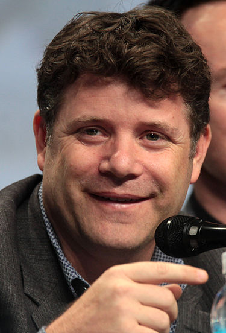
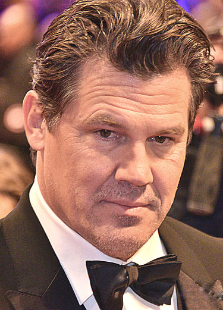
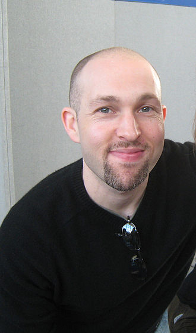
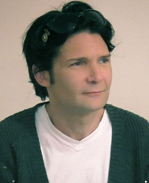
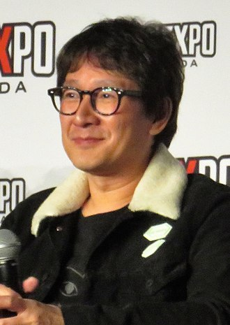
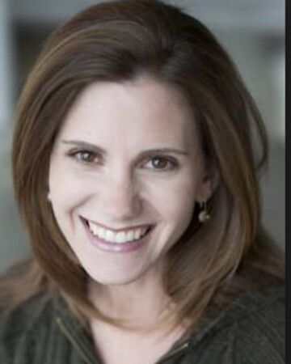
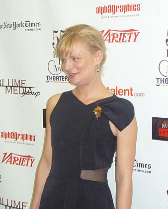

Información sobre los protagonistas de Los Goonies
Protagonistas
Sean Astin
Datos generales
Sean Michael Astin (Santa Mónica, California; 25 de febrero de 1971) es un actor, director y productor estadounidense, nominado al Óscar por su cortometraje Kangaroo Court, y mundialmente conocido por su papel de Michael "Mikey" Walsh en la película Los Goonies y por su papel de Samsagaz Gamyi en la trilogía cinematográfica de El Señor de los Anillos. Es hijo adoptivo del actor John Astin.
Carrera como actor
Astin interpretó su primer papel como actor en 1981, en una película para televisión titulada Please Don't Hit Me, Mom, en la que interpretó a un niño con una madre que abusaba de él (interpretado por su madre en la vida real Patty Duke). A los trece años, debutó para la pantalla grande como Mickey en Los Goonies (1985). Después de Los Goonies, Astin ha aparecido en varias películas más, incluyendo el telefilme de The Walt Disney Company The B. R. A. T. Patrol, con Nia Long, Thomerson Tim y Brian Keith, Like Father Like Son (1987), White Water Summer con Kevin Bacon (1987), La guerra de los Rose (1989), y la película sobre la Segunda Guerra Mundial Memphis Belle (1990), Operación: soldados de juguete (1991), El hombre de California (1992), y el biopic de un futbolista universitario Rudy (1993).
En 1994, Astin dirigió y coprodujo con su esposa sean astin el cortometraje Kangaroo Court, que recibió una nominación al Óscar al mejor cortometraje. Astin continuó apareciendo en películas durante todo el decenio de 1990, entre ellos el telefilme de ciencia ficción para Showtime Harrison Bergeron (1995), la película sobre la Guerra del Golfo Courage Under Fire (1996), y la sátira política de Warren Beatty Bulworth (1998).
Sam en El Señor de los Anillos
Uno de sus papeles más importantes fue como el fiel y leal amigo de Frodo, el hobbit Samsagaz Gamyi, en la trilogía de El Señor de los Anillos (2001-2003). Entre los numerosos premios otorgados a la trilogía, en particular a su última entrega El retorno del Rey (ganadora de once premios de la Academia, incluyendo el de mejor película), Astin recibió muchas nominaciones y premios por su propia actuación, llevándose a casa el Premio Saturn al mejor actor de reparto y los de Las Vegas Film Critics Society, los Seattle Film Critics, la Utah Film Critics Society y la Phoenix Film Critics Society. Él y otros miembros del elenco se hicieron muy amigos durante la filmación, especialmente de Elijah Wood.
Se puede ver a la hija de Astin, Alexandra, en El retorno del Rey, interpretando a su hija en la ficción, Elanor Gamyi, que se dirige hacia él cuando regresa de decir adiós a Frodo, Bilbo y Gandalf en los Puertos Grises.
Mientras trabajaba en El Señor de los Anillos, Astin convenció a varios compañeros de reparto y miembros de la producción, incluido el director Peter Jackson, para que le ayudaran a hacer su segundo cortometraje, The Long and Short of It. La película, que se desarrolla en una calle de Wellington, se estrenó en el Festival de Cine de Sundance de 2003 y aparece como extra en el DVD de El Señor de los Anillos: las dos torres.
Josh Brolin
Datos generales
Josh James Brolin (Santa Mónica, California; 12 de febrero de 1968) es un actor de cine y televisión estadounidense. Su primer papel fue en la película Los Goonies en 1985. Desde entonces ha aparecido en varias películas y es conocido por papeles como Llewellyn Moss en No Country for Old Men, el Agente K joven en Hombres de negro III, Thanos en Avengers: Age of Ultron (Cameo), Avengers: Infinity War, Avengers: Endgame, Cable en Deadpool 2, el presidente George W. Bush en W y Dan White en Milk, por la cual recibió nominaciones al Óscar y SAG como mejor actor de reparto. Además, ha tenido papeles en películas como El hombre sin sombra, In the Valley of Elah, American Gangster, True Grit, Sin City: A Dame to Kill For y Hail, Caesar!. Es hijo del actor James Brolin.
Carrera
Empezó su carrera en series de televisión antes de conseguir un papel más relevante como Brand Walsh en la película Los Goonies (1985), dirigida por Richard Donner. Fue tenido en cuenta para el papel de Tom Hanson en la serie 21 Jump Street; junto a Johnny Depp fueron los finalistas para el rol, periodo durante el cual ambos actores se hicieron amigos. El papel fue finalmente para Depp. Brolin apareció luego como invitado en un episodio de la primera temporada de la serie.
Brolin insinuó que se alejó del cine durante años después del estreno de su segunda película, Thrashin' (1986), donde según él tuvo una actuación "horrenda". Durante varios años, actuó en obras de teatro en Rochester, Nueva York, a menudo junto a su mentor y amigo Anthony Zerbe. Uno de sus papeles más importantes durante sus comienzos fue el de Wild Bill Hickok en la serie wéstern de televisión The Young Riders, la cual duró tres temporadas, de 1989 a 1992. Otras dos series de las que formó parte fueron Winnetka Road (1994) y Mister Sterling (2003), ambas canceladas tras pocos episodios.
Su extenso trabajo en el cine incluye varios roles como villano en películas de fines de los años 2000 y principios de los 2010, como Planet Terror, Milk, American Gangster y Wall Street 2: el dinero nunca duerme, de Oliver Stone. También protagonizó la película ganadora del Óscar No Country for Old Men, de los hermanos Coen. Desde 2014 Brolin interpreta a Thanos, villano de los cómics de Marvel, dentro del Universo Cinematográfico de Marvel. El actor ha prestado su voz al personaje y lo ha encarnado mediante captura de movimiento en cuatro películas de la franquicia Guardianes de la Galaxia (2014), Avengers: Age of Ultron (2015), Avengers: Infinity War (2018) y Avengers: Endgame (2019).
Además de Thanos, Brolin interpreta a otro personaje de Marvel, Cable, en la película de 2018 Deadpool 2.
Jeff Cohen
Datos generales
Jeffrey Bertan Cohen, J.D. (Jeffrey Bertan McMahon; 25 de junio de 1974) es un abogado estadounidense (socio fundador de Cohen & Gardner, LLP1) y actor retirado de la actividad, popular por su papel de "Gordi" en la película de 1985 Los Goonies de Richard Donner.
Fuera de este papel, el trabajo de Jeff Cohen y su carrera como actor no son destacables.
Corey Feldman
Datos generales
Corey Scott Feldman (Chatsworth, California, 16 de julio de 1971) es un actor estadounidense de cine y televisión. Se hizo conocido durante la década de 1980 con papeles en películas como Los Goonies, Jóvenes ocultos y Cuenta conmigo.
Carrera
Primeros años
Corey Feldman es el segundo de cinco hermanos. Nació en Chatsworth, California, hijo de Sheila Goldstein, su representante durante su infancia, y de Bob Feldman, un músico fallido que finalmente creó su propia agencia de talentos dirigida a modelar las carreras artísticas de otros niños aparte de sus hijos.1 Corey fue educado en el judaísmo y tiene dos hermanos, Eden y Devin, y dos hermanas, Mindy y Brittnie. Mindy Feldman comenzó su carrera artística a los seis años, siendo la más joven del nuevo Club de Mickey Mouse en la década de 1970.
Inicio de su carrera
Corey Feldman comenzó la década de 1990 interpretando la voz de Donatello en la primera película de las Tortugas Ninja (1990). Tras reconocer públicamente su problema con las drogas, Corey luchó para superar su adicción y recuperar su vida y su carrera trabajando con adolescentes, protagonizando películas de bajo presupuesto y lanzando un álbum musical. Regresó a la gran pantalla con Tortugas Ninja III (1992), donde de nuevo interpretó la voz de Donatello, y apareció junto a Corey Haim en Blown Away (1992), así como en Historias de la Cripta: Bordello de Sangre.
A finales de la década de 1990 Feldman apareció en Dweebs, una serie de la CBS y lanzó su segundo álbum musical Still Searching for Soul con su banda Corey Feldman's Truth Movement. En 1999 apareció en video musical New Found Glory de Hit or Miss como el Oficial Corey Feldman. Ese mismo año apareció en la serie de televisión de El Cuervo: Escalera hacia el Cielo.
Ke Huy Quan
Datos generales
Jonathan Ke Quan, nacido como Ke Huy Quan( 關繼威) (20 de agosto de 1971) es un exactor vietnamita, especializado en papeles de niño. Más conocido como actor en películas de la década de los 80's tales como Indiana Jones y el templo maldito y Los Goonies.
Fuera de su papel en Los Goonies, su carrera como actor no es destacable.
Kerri Green
Datos Generales
Kerri Lee Green (nacida 14 de enero de 1967) es una actriz, escritora y directora estadounidense.
Carrera
Green nació en Fort Lee, New Jersey. Creció en Woodcliff Lake, New Jersey y asistió a Pascack Hills High School en Montvale, New Jersey
Protagonizó varias películas en el papel de joven adolescente, incluyendo Summer Rental (1985), la cual protagonizó John Candy. Su gran oportunidad llegó con la película de 1985 The Goonies, en la que hizo el papel de la porrista-aventurera Andrea "Andy" Carmichael. Obtuvo la aclamación de la crítica por su papel en Lucas (1986). Sin embargo, en su siguiente película, Three for the Road (1987), la cual presentó Charlie Sheen y Alan Ruck, no le fue tan bien. Actuó en una película independiente llamada Blue Flame y apareció en dos episodios de la serie de televisión Mad About You en el papel de la secretaria de Paul. Luego de retirarse de la actuación se fue a estudiar arte en Vassar College, donde fue compañera del hermano de Marisa Tomei, Adam, y del desarrollador de Bioshock Ken Levine.3 Green finalmente co-fundó una compañía de producción de películas, Independent Women Artists, con Bonnie Dickenson. Con Dickenson, co-escribió y dirigió la adaptación cinematográfica sobre embarazo adolescente llamada Bellyfruit (1999).
Martha Plimpton
Datos Generales
Martha Campbell Plimpton (Nueva York; 16 de noviembre de 1970) es una actriz estadounidense.
Carrera
Es hija de los actores Keith Carradine y Shelley Plimpton, nieta de John Carradine, sobrina de David Carradine y Robert Carradine, prima de Ever Carradine, y Kansas Carradine. Sus padres nunca se casaron y se separaron poco después de nacer ella. Fue criada por su madre en Nueva York, en el Upper West Side. No conoció a su padre hasta que tuvo 4 años. Así y por eso tomó el apellido de su madre y no el de su extensa familia interpretativa. Fue novia del fallecido actor River Phoenix. Rompieron años antes de su muerte, aunque consiguieron mantener una fuerte amistad hasta la muerte de River en 1993. Después fue pareja de John Patrick Walker.
Comenzó muy jovencita en el drama de Alan J. Pakula, Rollover, haciendo de la hija mayor de un matrimonio adinerado; aquí trabajó con Jane Fonda y Kris Kristofferson. Sin embargo, sorprendió su actuación en el drama de aventuras The River Rat en 1984, donde era una adolescente que conoce a su padre, interpretado por Tommy Lee Jones, un exconvicto recién liberado de prisión.
En 1985 participó en el éxito de taquilla juvenil Los Goonies, que trata de un grupo de niños que, al enterarse de la noticia de que van a perder sus casas, deciden ir en búsqueda de un tesoro. Martha era la engreída y sabelotodo Stef. En esta película también estuvieron Sean Astin (conocido por su papel de Sam en El Señor de los Anillos), Josh Brolin, Corey Feldman o Jonathan Ke Quan, entre otros.
La siguiente película que realizó fue el drama de aventuras de Peter Weir, The Mosquito Coast, donde un excéntrico inventor Allie Fox (Harrison Ford), harto de vivir en la sociedad estadounidense, decide un día abandonar su país y trasladarse junto a su esposa (Helen Mirren) y su hijo Charlie (River Phoenix) a Belice. En esta película, hacía de la cuasi novia de River Phoenix y esta relación fue traspasada fuera de las pantallas.
Fueron muchos los papeles que hizo durante su juventud, pero destacaron dos. Por un lado, participó en el drama de Woody Allen, Otra mujer, donde hacía el papel de hijastra de una mujer muy inteligente que se replantea su vida cuando decide escribir un libro, y en la comedia de Ron Howard, Parenthood, que hacía de una joven rebelde que estaba embarazada y que solo quería vivir con su despreocupado novio, junto a Steve Martin, Dianne Wiest, Mary Steenburgen, Jason Robards, Rick Moranis, Tom Hulce, Keanu Reeves, Harley Jane Kozak, Joaquin Phoenix y Eileen Ryan, y que posteriormente se convirtió en serie.
Alcanzó la madurez con el drama biográfico de Alan Rudolph, La señora Parker y el círculo vicioso, que se ambientaba en los años 20, con Jennifer Jason Leigh, Campbell Scott, Matthew Broderick y Peter Gallagher. Otra película importante es Beautiful Girls, en la que era una camarera que estaba harta de su celoso novio, pero en cuanto él coquetea con una chica, se da cuenta de sus sentimientos e intenta volver con él. Ahí contó con la compañía de Matt Dillon, Timothy Hutton, Rosie O'Donnell, Natalie Portman, Mira Sorvino y Uma Thurman.
Son muchas las películas en las que ha participado. Sin embargo, cansada en parte del poco reconocimiento alcanzado en el cine, decidió abandonar momentáneamente la pantalla grande. Así se pasó al teatro, donde actuó en Chicas Top y The Coast of Utopia, por los que fue nominada al Tony y actuó junto a Ethan Hawke, Bobby Cannavale y Elizabeth Berkley.
Sin embargo, en la última década, compaginó sus actuaciones en el teatro con la presencia en muchas series. Una de las primeras fue en la serie Urgencias, donde interpretó en un arco de cuatro capítulos a Meg Corwin. Luego le siguieron Law and Order: Special Victims Units, 7th Heaven, Law and Order: Criminal Intent o Surface.
Pero es en estos últimos años donde ha tenido más trabajo televisivo, comenzando por Grey's Anatomy, donde fue la madre de un joven paciente. En la que se puede apreciar su registro dramático fue en la bien recibida por la crítica The Good Wife, donde interpretaba a Patti Nilhom, una abogada embarazada que se enfrentó al bufete en dos casos diferentes. También sale en How To Make It In America en el papel de Edie Weitz, compañera de trabajo de Rachel Chapman. Sin olvidar su participación en la serie Fringe, donde interpreta a una mujer policía.